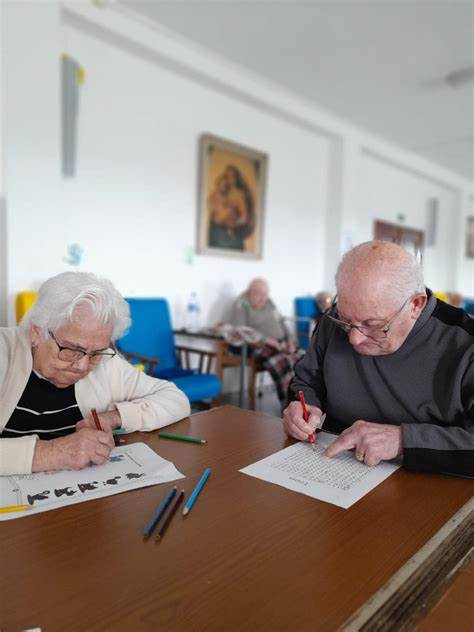

Serviciile Noastre
Oferim servicii complete pentru confortul, sănătatea și bunăstarea seniorilor noștri.
Îngrijire permanentă (24/7)
- Asistență medicală constantă
- Administrarea tratamentelor
- Evaluări regulate ale stării de sănătate
Ajutor în activitățile zilnice
- Igienă personală, mobilitate și îmbrăcare
- Toaletare, frizerie și îngrijire personală
- Servicii personalizate pentru fiecare rezident

Activități recreative și sociale
- Jocuri, muzică, terapie ocupațională
- Ateliere creative, petreceri tematice
- Plimbări și activități în aer liber